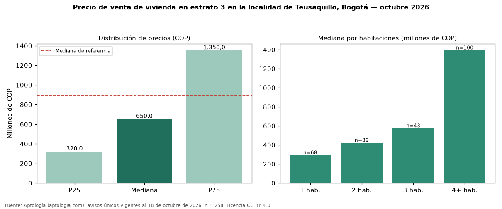

Precio de venta de vivienda en estrato 3 en la localidad de Teusaquillo, Bogotá — octubre 2026
Con 258 avisos únicos, el precio mediano de vivienda en estrato 3 en venta en la localidad de Teusaquillo, Bogotá es COP 650 millones. Eso es 27 % menos que la mediana de toda la oferta de venta en la localidad de Teusaquillo, Bogotá (COP 893 millones). En todo Bogotá, la misma combinación tiene mediana COP 410 millones (+59 %). El rango intercuartílico va de COP 320 millones a COP 1,35 mil millones (razón 4,2). Por metro cuadrado, la mediana es COP 6.490.385/m² (−3 % frente a COP 6.666.667/m²), puesto 4 de 18 localidades comparables. Cruzando con la oferta de arriendo equivalente, la rentabilidad bruta implícita es 9,2 % anual. Por habitaciones: 1 habitación, COP 290 millones (n = 68); 2 habitaciones, COP 420 millones (n = 39); 3 habitaciones, COP 572 millones (n = 43); 4 o más habitaciones, COP 1,39 mil millones (n = 100). Datos abiertos CC BY 4.0 de Aptología; fuente y búsqueda de inmuebles: https://www.aptologia.com/venta/bogota/teusaquillo. Archivos: PDF de 2 páginas, CSV con las cifras y gráfica PNG.

| Avisos únicos | 258 |
|---|---|
| Percentil 25 | COP 319.999.999 |
| Mediana | COP 650.000.000 |
| Percentil 75 | COP 1.350.000.000 |
| Mediana por m² | COP 6.490.384 |
Fuente: avisos vigentes de portales inmobiliarios recopilados por Aptología, deduplicados (mínimo 30 avisos únicos por celda). Precios pedidos, no cerrados. Fecha: 2026-10-18.